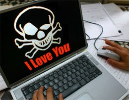
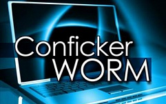

ILOVEYOU
При открытии вложения вирус рассылал копию самого себя всем контактам в адресной книге Windows, а также на адрес, указанный как адрес отправителя. Он также совершал ряд вредоносных изменений в системе пользователя.Вирус был разослан на почтовые ящики с Филиппин в ночь с 4 мая на 5 мая 2000 года; в теме письма содержалась строка «ILoveYou», а к письму был приложен скрипт «LOVE-LETTER-FOR-YOU.TXT.vbs». Расширение «.vbs» было по умолчанию скрыто, что и заставило ничего не подозревающих пользователей думать, что это был простой текстовый файл.
В общей сложности, вирус поразил более 3 млн компьютеров по всему миру. Предполагаемый ущерб, который червь нанес мировой экономике, оценивается в размере $10 – 15 млрд, за что вошел в Книгу рекордов Гиннесса, как самый разрушительный компьютерный вирус в мире.

Conficker
Один из опаснейших из известных на сегодняшний день компьютерных червей.
Вредоносная программа была написана на Microsoft Visual C++ и впервые появилась в сети 21 ноября 2008. Атакует операционные системы семейства Microsoft Windows (от Windows 2000 до Windows 7 и Windows Server 2008 R2). На январь 2009 вирус поразил 12 млн компьютеров во всём мире. 12 февраля 2009 Microsoft обещал $250 тыс. за информацию о создателях вируса.
